Unix, Free Open Source Software, and Linux Security
Z. Cliffe Schreuders


This content and code (including slides CSS, HTML, and JS) by Z. Cliffe Schreuders is dual licensed under a Creative Commons Attribution-ShareAlike v4.0 International License and GNU Affero General Public License v3.
Lecture recordings are published on the VLE and YouTube.
Slides created using AwesomeSlides converter by Z. Cliffe Schreuders
Popular Operating Systems


- Microsoft Windows
- Apple Macintosh
- Based on FreeBSD, NetBSD, NeXTSTEP
- Unix-based (UNIX 03 certification)
- Linux
- 'Unix-like'
- Free and open source software (FOSS)
Unix/Linux Security

- During this module you will be using Linux extensively
- In this topic we will cover some history, then dig into some Unix commands and use
Why you should care about Unix and Linux...
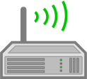 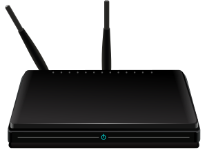- It is a mature technology that has proven to be able to scale
- You can find Linux on:
- most servers (all kinds including web servers), most super computers, mobile phones (including the Android kernel), embedded devices, TVs, ereaders, cars, fridges, routers, desktops (Mine! Yours?)
Why you should care about Unix and Linux...
 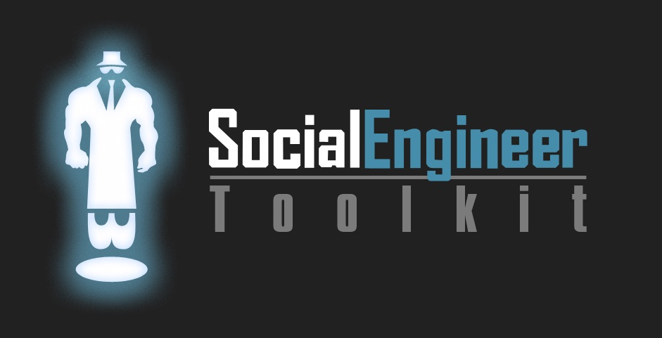
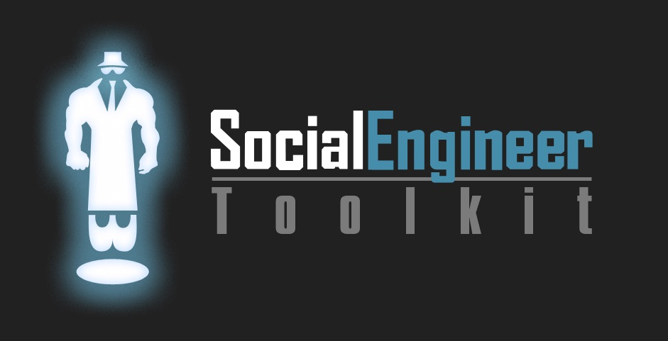
 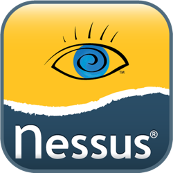
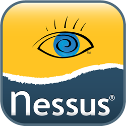
 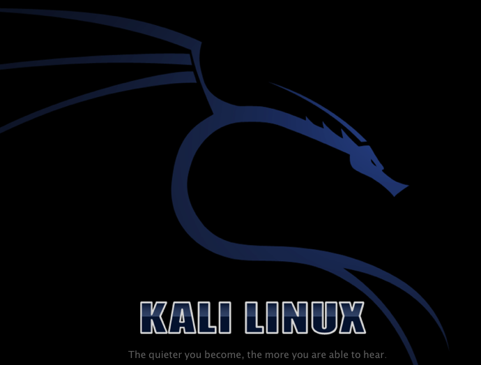
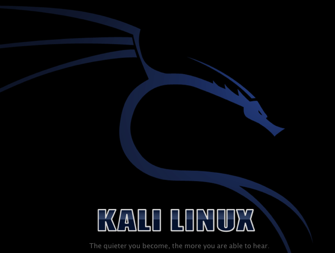
- Most large organisations will have at least some Unix systems, typically servers
- Many security-related jobs involve Unix
- Penetration testing is typically conducted from a Linux system due to the large number of available tools
A short history lesson..
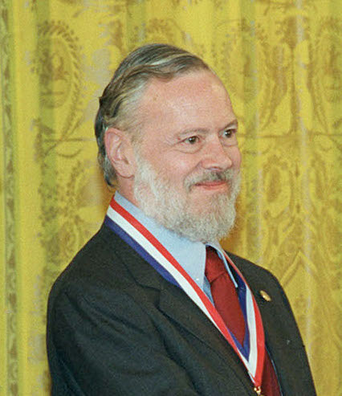- In 1969 the UNIX operating system was created at AT&T Bell Labs
- Programmed in assembly
- C was created by Dennis Ritchie (for UNIX)
- Over time, most of UNIX was rewritten in C
- Was very popular in academic institutions, they typically received the source code
Image public domain: http://commons.wikimedia.org/wiki/File:Dennis_MacAlistair_Ritchie.jpg
{kind=link}
A short history lesson..

- Designed for computers with dumb terminals that were shared by many users
- Thin clients
- Analogous to the cloud
- The security model was based on multiple users sharing the one computer
Unix security goals
- Unix was designed for multiple users
- Protecting users on the system from each other
- Including protecting the system resources from users
- Like most systems from the era, not designed with the Internet in mind
- However, additional security features have been added over time
Unix security
- Unix consists of:
- an operating system kernel
- running processes (instances of programs)
- The kernel provides security features such as:
- each process has a separate address space (memory pages)
- each process is associated with a user account, and restricted according to what the user is allowed to do
A short history lesson..
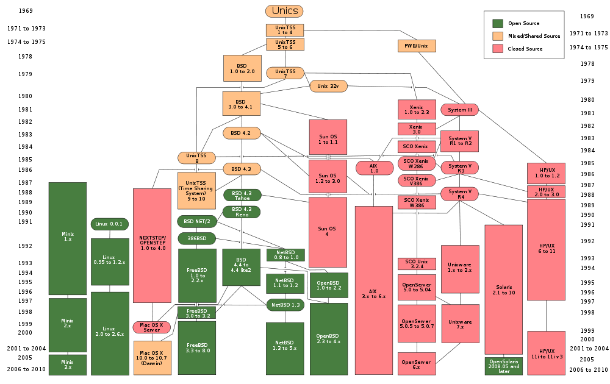Single UNIX Specification (SUS)
- The Open Group is the current owner of the UNIX trademark
- UNIX no longer refers to a particular operating system
- SUS is a family of standards that an OS can be certified against to call itself 'Unix'
- Created by the Open Group and IEEE, maintained by the Austin Group
- Certification is expensive
Unix

- Unix certified includes:
- Solaris
- Darwin
- Mac OS X
- Unix-like:
- Linux
- FreeBSD
- OpenBSD
Richard Stallman (aka: rms)...
- Free software advocate
- Founded the Free Software Foundation (FSF)
GNU Free Documentation License, http://commons.wikimedia.org/wiki/File:Richard_Matthew_Stallman.jpeg
Richard Stallman (aka: rms)
- Released emacs, a text editor, as 'free'
- Others built on it and created a version in C, and there were issues surrounding the rights Stallman had to the new version (the author allegedly sold the rights to the new code and changed his mind about whether Stallman could use the code)
- Free software was born...
Richard Stallman (aka: rms)
- Pioneered copyleft
- Main author of the GPL license
- Right to share
- Right to modify
- Right to share modifications
- Copyleft: any modifications to the source code must also be licensed under the GPL
RMS and GNU
- GNU (GNU is Not Unix)
- Founded in 1983
- A free Unix-like system
- Written from scratch
- Was missing a kernel
- (GNU Hurd was incomplete)
Linus Torvalds
- “I'm doing a (free) operating system (just a hobby, won't be big and professional like gnu) for 386(486) AT clones”
-
– 1991 post to comp.os.minix newsgroup
- Creator, chief architect, and coordinator of the Linux kernel
GNU Free Documentation License, http://en.wikipedia.org/wiki/File:Linus_Torvalds.jpeg
GNU/Linux
- GPL licensed
- Very large developer community
- Now supports a very large range of devices
GNU/Linux Distributions
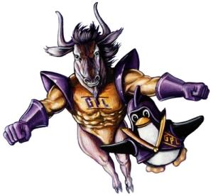 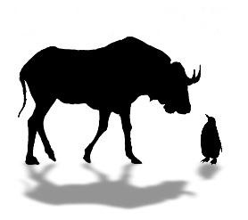- Combining GNU with the Linux kernel produced a completely free Unix-like system
- Known as GNU/Linux, or just 'Linux' (although, rms hates that)
GNU/Linux Distributions
- A Linux distribution is typically made up of:
- The Linux kernel
- Software by GNU and others...
- A package management system, for managing/automating software installs and updates
- System utilities
- Applications: web, word processing etc
GNU/Linux Distributions
 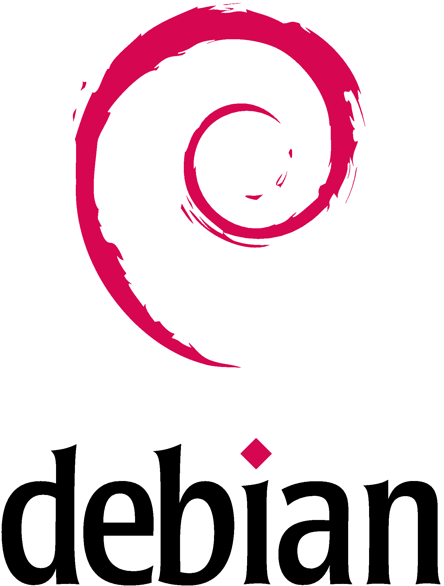
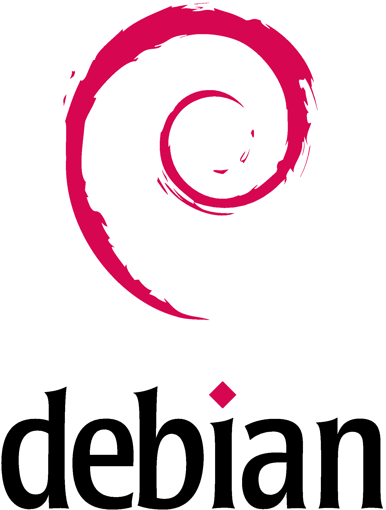


- There are free community 'distros', and 'enterprise' distros that are supported
- In this class we are using openSUSE
- German origin
- Has similarities with Red Hat
- The gratis version of SUSE
- Previously owned by Novell
- In 2011 SUSE was acquired by Attachmate
Some More FOSS Terminology

- Free software – emphasizes the freedom granted
- Open source software – emphasizes the development methodology
- In practice much the same thing
- Free open source software (FOSS) – neutral terminology
Linux
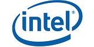 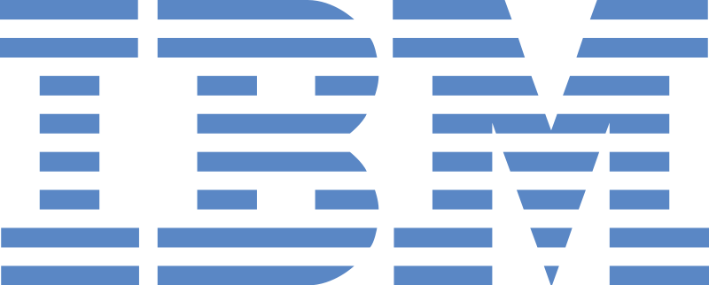 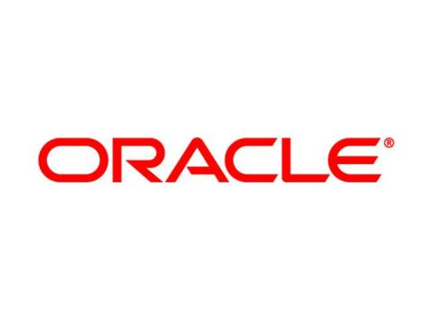 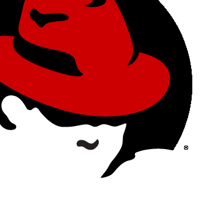- Large corporations hire programmers to contribute to Linux, including:
- IBM
- Intel
- Novell
- Red Hat
- Oracle
Linux and Security
- Based-on Unix discretionary access controls (DAC)
- Root user, and ordinary users
- Linux includes lots of additional security features:
- Extended ACLs, Linux capabilities, mandatory access controls (MAC), such as SELinux and AppArmor
Linux and Security: Quick Tips
- Do:
- Install software from trusted repositories
- Install security updates
- Encrypt your home directory or disk
- Don't:
- Log in as root
- Install software or run commands that you don't trust
The Filesystem
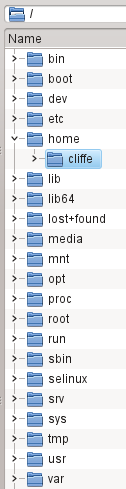- One major difference between Windows and Unix-like systems is the way files are organised
- Windows:
- C:
- D:
- Linux:
- /
- /media/USB/ (All “mounted” under one root)
The Filesystem

- Names are case sensitive
- File extensions are optional
- Names can be long, and include symbols
- Everything is a file!
Filesystem Hierarchy Standard
- Filesystem Hierarchy Standard (FHS) defines how the directories (what Windows sometimes refers to as 'folders') and files are organised
- http://www.pathname.com/fhs/
Basic Unix command shell
- Commands:
- ls, cp, mv, cat, echo, cd, mkdir
- vi / nano, kate / gedit
- man – is your friend
- info: other info, whatis: one-line description
- --help
- Command shell-foo:
- Piping between programs, using |
- Send output of a program to a file, using >
Conclusion
- Linux/GNU systems are FOSS and Unix-like
- It is important to learn Linux if you plan to work in the security industry
- Linux security is based on Unix security, with additional features